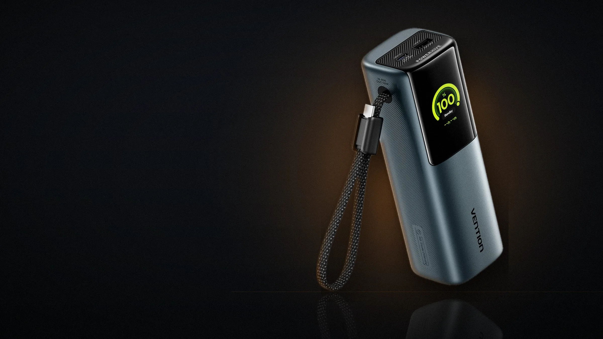
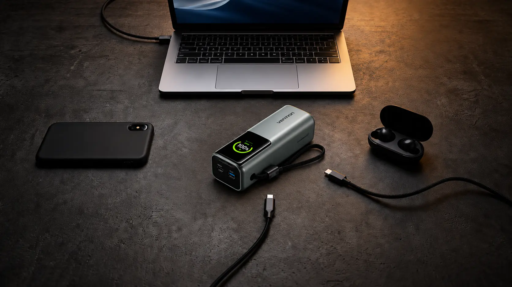
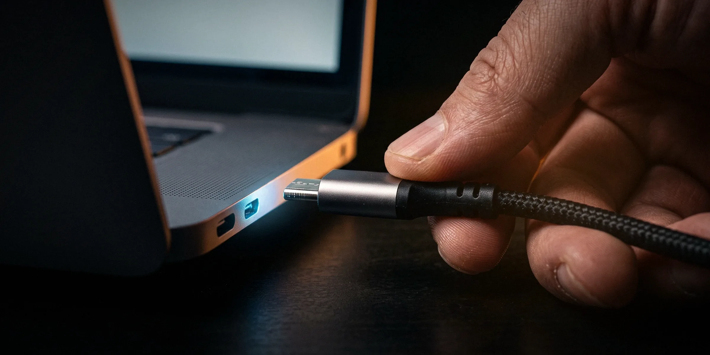
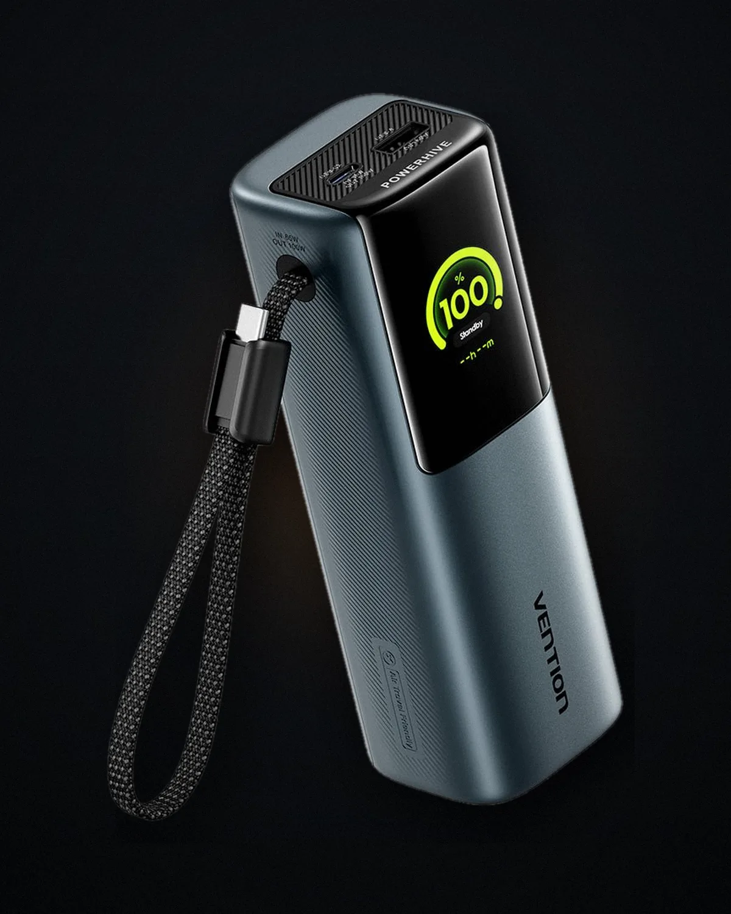

Стандартні протоколи, а не власний «швидкий заряд» під одну марку. Ноутбук, телефон і планшет домовляються про напругу самі.

Vention PowerHive · 74 Вт·год · PD 3.0 · UFCS
Ноутбук не помітить,
що світла немає.
100 ват в один порт - це більше, ніж дає штатна зарядка більшості робочих ноутбуків. Не «підтримка заряду», не «повільно доживемо до ранку», а нормальна робоча швидкість від коробки завбільшки з бляшанку 0,33.
- 165Втсумарна віддача
- 100Втв один порт USB-C
- 74Вт·годреальний запас енергії
- 1:50до власних 100 %
01 — навіщо взагалі 165 Вт
Павербанк на 10 000 рятує телефон.
Робочий день він не рятує.
Коли вимикається світло, телефон - найменша з проблем. Він і сам протримає день. Проблема починається там, де у вас відкритий ноутбук, дзвінок із клієнтом о третій, незакритий таск і дедлайн, якому байдуже до графіків відключень.
А ноутбук живе за іншими правилами. Кишеньковий павербанк на 10 000 мА·год - це приблизно 37 Вт·год і 20-30 Вт віддачі. Багато ноутбуків від такого джерела взагалі відмовляються заряджатися і просто повільніше розряджаються: батарея тане, тільки трохи довше.
Щоб ноутбук справді заряджався під час роботи, джерело має віддавати більше, ніж він споживає. У робочому режимі це 45-90 Вт. Саме звідси береться цифра 100 Вт на порт - не заради красивого числа на коробці, а тому що нижче цієї межі ноутбук не заряджається, а лише тримається.
Різниця не у відсотках, а у ватах.
Мілі-ампер-години нічого не кажуть про те, чи потягне павербанк ноутбук. Про це кажуть вати.
Типовий 10 000 мА·год
Vention PowerHive
запас енергіївіддача
02 — швидкість
Сто ват.
В один порт.
Обидва порти USB-C поодинці видають до 100 Вт - це рівень зарядки, з якою продають 16-дюймові ноутбуки. Нижче - півгодинний тест лабораторії Vention: скільки набирає розряджений ноутбук за той час, поки ви п'єте каву.
- MacBook Pro 13"39 %
- Dell Vostro 549040 %
- ThinkPad T1445 %
- Lenovo Xiaoxin Pro 1646 %
Дані Vention Lab, 30 хвилин зарядки від нуля. Ваш результат залежить від моделі, температури й того, чи працюєте ви одночасно з зарядкою.
Плюс китайські протоколи, включно з новим галузевим UFCS - його підтримують Huawei, Xiaomi, OPPO і vivo.
Окремий режим для навушників і фітнес-браслетів, щоб павербанк не вимикався від того, що навантаження надто мале.
03 — три виходи
Ноутбук, телефон і навушники.
Одночасно.
Два USB-C і один USB-A. Але вати між ними діляться не порівну, і це важливо знати до покупки, а не після. Увімкніть порти нижче й подивіться, що станеться.
очікування
100 %
0Вт
очікує навантаження
Натисніть на порт, щоб під'єднати пристрій.
Розподіл потужності зашитий у контролері. Найцікавіша пара - USB-C2 разом із USB-A: вони ділять 24 Вт на двох, тому ноутбук завжди варто вішати на вбудований кабель USB-C1.

04 — TFT-екран
Екран, який показує вати,
а не палички.
Чотири світлодіоди на корпусі - це ворожіння. Кольоровий TFT показує відсоток заряду з точністю до одиниці, реальну потужність у ватах прямо зараз, температуру, кількість пройдених циклів і скільки хвилин лишилося до повного заряду.
Практична користь проста: ви бачите, що ноутбук справді бере 96 Вт, а не 27 Вт через дешевий кабель. І бачите, що павербанк набере 100 % саме до того часу, коли за графіком знову вимкнуть світло.
Окремо є режим «Emotions»: замість цифр екран показує обличчя, і за ним зчитується стан із метрової відстані. Дрібниця, але коли павербанк лежить у кутку кімнати, ви розумієте, що з ним, не встаючи з крісла.
- 0-20 %пора шукати розетку
- 20-80 %усе спокійно
- 80-100 %повний бак
- понад 90 Втпрацює на межі
- перегрівскинув потужність
- соннічого не під'єднано
05 — запас
74 ват-години
і чесна математика.
Усередині чотири елементи по 5000 мА·год, з'єднані так, що дають 14,8 В і 74 Вт·год. Це і є справжня одиниця виміру запасу - ват-години, а не мілі-ампер-години.
Тому на коробці чесно написано ще одне число: 12 000 мА·год віддачі на 5 вольтах. Це не обман і не «підробка ємності». Просто щоб віддати енергію вашому телефону на 5 В, павербанк знижує напругу зі своїх 14,8 В, і частина енергії неминуче йде в тепло. Так працює будь-який павербанк на ринку, різниця лише в тому, хто про це пише на коробці.
Скільки це в повних зарядках
- iPhone 164,0
- iPhone 15 Pro Max3,2
- Galaxy S243,4
- Xiaomi 14 Pro2,9
- iPad 91,8
- iPad Pro 41,3
- AirPods35,4
- Apple Watch67
Дані Vention Lab. Ноутбук - окрема історія: 74 Вт·год це приблизно повна батарея MacBook Air 13" плюс ще трохи зверху.
06 — зворотний бік
Світло дали на дві години?
Встигне.
Вхід до 65 Вт і повна зарядка за 1 годину 50 хвилин. Це головна цифра для життя за графіком: у вікно між відключеннями павербанк встигає набратися повністю, а не наполовину.
Заряджати можна і через вбудований кабель, і через роз'єм USB-C2 - будь-яким зарядним пристроєм на 65 Вт, у тому числі тим, що вже лежить у сумці від ноутбука. Двостороння швидка зарядка означає, що павербанк може одночасно заряджатися сам і живити ноутбук, працюючи як буфер між розеткою і робочим місцем.
Вікно зі світлом
2:00
Повна зарядка PowerHive
1:50
Дві години - найкоротше вікно, яке зазвичай дають між чергами відключень. Павербанк вкладається в нього повністю; якщо світла дали три чи чотири години, запас часу ще більший.

07 — кабель
Кабель, який неможливо
забути вдома.
Основний USB-C вбудований у корпус і водночас служить ремінцем. Його не треба шукати в сумці, він не лишається на столі в коворкінгу і не перетворюється на клубок у кишені рюкзака.
Оболонка плетена, з високою щільністю нитки; виробник заявляє понад 10 000 циклів згинання без обриву - саме те місце, де зазвичай помирають дешеві кабелі.
У коробці є другий кабель.
Окремий USB-C на 240 Вт довжиною 0,5 м - для другого пристрою або для швидкої зарядки самого павербанка.
Разом виходить дві довжини на вибір: короткий ремінець, коли павербанк лежить поруч із ноутбуком, і півметровий кабель, коли він у сумці, а ноутбук на колінах.
08 — чесно про мінус
650 грамів.
Ми не вдаватимемо, що це мало.
Це не той павербанк, який кладуть у кишеню джинсів. 158,8 × 53,4 × 50 мм і приблизно 650 г - у рюкзаку ви його відчуєте, і краще дізнатися про це зараз.
Фізику не обійти: 74 Вт·год - це чотири повноцінні елементи, а 165 Вт віддачі - це контролер і радіатор, які теж щось важать. Кожен павербанк, здатний зарядити ноутбук, важить приблизно стільки ж.
Якщо потрібен тільки телефон - беріть менший.
Цей має сенс тоді, коли у вашій сумці є ноутбук, від якого залежить робота.
145 ммбляшанка 0,33
158,8 ммPowerHive
09 — безпека
200 перевірок температури
щосекунди.
Від перезаряду й перерозряду, надструму, перенапруги, короткого замикання та перегріву - плюс вогнетривкий корпус.
Вбудований датчик стежить за нагрівом і сам знижує потужність, замість того щоб вимкнутися посеред зарядки ноутбука.
Після п'ятисот повних циклів залишається понад 80 % початкової ємності. Це приблизно два роки щоденного використання.
Ліміт ручної поклажі - 100 Вт·год. PowerHive у нього вкладається, тому його не заберуть на контролі.

10 — повні характеристики
Усе одним списком
- Модель
- Vention PowerHive FKF (FKFH0)
- Ємність елементів
- 20 000 мА·год · 4 × 5000 мА·год · 14,8 В · 74 Вт·год
- Номінальна віддача
- 12 000 мА·год при 5 В
- Сумарна віддача
- до 165 Вт
- USB-C1 (вбудований кабель)
- вихід до 20 В / 5 А — 100 Вт · вхід до 65 Вт
- USB-C2 (роз'єм)
- вихід до 20 В / 5 А — 100 Вт · вхід до 65 Вт
- USB-A (роз'єм)
- вихід до 20 В / 3 А — 60 Вт
- Розподіл на два порти
- C1 + C2 — 100 + 65 Вт · C1 + A — 100 + 60 Вт · C2 + A — 24 Вт
- Розподіл на три порти
- 100 Вт + 24 Вт
- Протоколи
- PD 3.0, PPS, QC, SCP, UFCS · двостороння швидка зарядка
- Час власної зарядки
- близько 1 год 50 хв від джерела 65 Вт
- Екран
- кольоровий TFT: відсоток, вати, температура, цикли, час до повного заряду, режим Emotions
- Розміри й маса
- 158,8 × 53,4 × 50 мм · близько 650 г
- Корпус
- PC + ABS, вогнетривкий пластик · кольори сірий і сріблястий
- Ресурс
- понад 80 % ємності після 500 циклів
- У коробці
- павербанк, кабель USB-C 240 Вт (0,5 м), фланелевий чохол, інструкція
- Сертифікати
- CE, FCC, UL, RoHS · гарантія 1 рік
11 — питання, які ставлять
Коротко й без ухилянь
Чому 20 000 мА·год, а віддає 12 000?
Бо це різні напруги. Всередині 14,8 В, а на виході для телефона - 5 В. Енергія зберігається однакова (74 Вт·год), але при перерахунку на 5 В виходить близько 12 000 мА·год, ще кілька відсотків з'їдає перетворювач. Так влаштовані всі павербанки, просто не всі це друкують.
Він зарядить мій MacBook Pro 16"?
Так, на 100 Вт - це майже штатна швидкість. Повністю ви його не зарядите: батарея 16-дюймової моделі приблизно 100 Вт·год, а в павербанку 74 Вт·год з урахуванням втрат. Реально це десь 70-75 % однієї повної зарядки, або кілька годин роботи.
Чи можна заряджати павербанк і ноутбук одночасно?
Так, це двостороння швидка зарядка. Павербанк вмикається в розетку, ноутбук - у павербанк, і поки є світло, живлення йде транзитом, а залишок наповнює батарею.
Чому USB-C2 разом із USB-A дають лише 24 Вт?
Ці два порти сидять на одному перетворювачі. Основна лінія - вбудований кабель USB-C1, тому ноутбук завжди чіпляйте саме на нього, а телефон і навушники - на решту портів.
Чи пустять із ним у літак?
Так. Ліміт для ручної поклажі майже всюди 100 Вт·год, у PowerHive 74 Вт·год, і на корпусі є маркування Air Travel Friendly. У багаж павербанки здавати не можна - тільки в салон.
Скільки він тримає заряд, якщо просто лежить?
Місяцями. У режимі сну споживання мінімальне, екран гасне. Але для батареї корисніше не тримати її місяцями ані на нулі, ані на всіх 100 % - оптимально десь 50-80 %, якщо павербанк лежить у резерві.
Світло вимикають за графіком.
Робота - ні.
165 Вт, 74 Вт·год, три пристрої одночасно й екран, який каже правду. Vention PowerHive - для тих, у кого в сумці лежить ноутбук, від якого залежить дохід.
Взяти на AliExpress